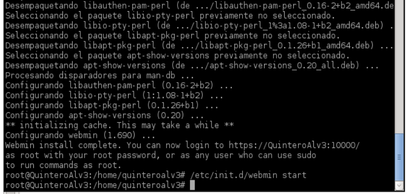
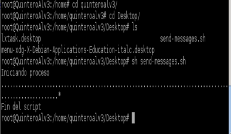

- Módulo: Sistemas Operativos
- Título del trabajo Registros de eventos local
- Componentes del grupo: Gregorio Adrián Quintero Álvarez
- Curso Académico: 2013/2014
- Fecha de entrega: 13 de Junio de 2014
Toda la actividad importante del sistema debe quedar registrada en los ficheros de registro. Esto nos permite tener un histórico del comportamiento del sistema, que nos ayuda a modo de "caja negra", a reconstruir situaciones del pasado para diversos fines. Esta es la utilidad de la monitorización y la auditoría.
En el sistema operativo de Windows debemos activar unas directivas de seguridad, para auditar los inicios de sesión al sistema. Establecemos el primer apellido como el nombre de la NETBIOS, después reiniciamos el equipo y creamos los usuarios Alu1, Alu2, Alu3 y a continuación entramos en el sistema con Alu1 de forma correcta, después entramos Alu2 poniendo la clave mal y no entramos en Alu3. Por último buscamos en el sistema la herramienta visor de sucesos y comprobamos como quedó registrado los eventos anteriores.
Primero debemos cambiar el nombre del host por el primer apellido, después instalamos el programa Webmin descargando el paquete deb de la web de Webmin y para instalarlo usamo dpkg. Para iniciar el servicio Webmin, ejecutamos /etc/init.d/webmin start y para acceder al programa Webmin, abrimos un navegador web y ponemos como URL "https://localhost:10000"
Ahora vamos a realizar una monitorización local de nuestro equipo GNU/Linux, con rotación de log's
Primero consultamos el fichero /etc/rsyslog.d/50-default.conf y añadimos una nueva línea para configurar la grabación de nuestros eventos. - Primero Como recurso.prioridad usaremos local0. - Segundo Como fichero de log usaremos /var/log/nombrealumno/prueba-local.log. Depués añadimos la siguiente línea al fichero de configuracion /etc/rsyslog.d/50-default.conf: - local0.* /var/log/nombredelalumno/prueba-local.log. Con el usuario root, crear el fichero /var/log/nombredelalumno/prueba-local.log vacío y por último debemos recargar el servicio rsyslog, para que se recargue la nueva configuración
Empezaremos comprobando que el fichero de log está vació por el momento con el comando cat /var/log/nombredelalumno/prueba-local.log. Ahora vamos a usar el comando logger para generar mensajes de log en el fichero anterior. Usaremos para nuestros ejemplos el recurso "local0". Pero también se podrían usar local1, local2, local3, local4, local5, local6 y local7. Posteriormente crearemos varios registros mediante el comando logger, usando varias prioridades diferentes y otros valores para Consultar los mensajes registrados, e indicar sobre un ejemplo el significado de cada campo de una línea concreta del log.
Para empezar configuraremos el programa logrotate permite hacer rotación de los ficheros de log que se realizara en /etc/logrotate.conf. Ahora vamos a configurar logrotate para generar rotaciones de nuestro fichero de log. Para ello crearemos el fichero /etc/logrotate.d/nombre-del-alumno, ahora Vamos a generar muchos mensajes de log en el fichero de registro de eventos y podemos usar el script cuya función es la de generar cientos de mensajes de log hacia el nuevo fichero de registro. Usando el comando siguiente podemos aumentar el tamaño del registro de log con la información contenida en un fichero de texto: logger -p local0.notice -t ETC-MOTD -f /etc/motd y posteriormente comprovamos que su tamaño ha aumentado. Por último para que se dispare la rotación de log automáticamente podemos reiniciar el equipo y si no queremos reiniciar el equipo, podemos ejecutar manualmente el programa de rotación logrotate de la siguiente forma: /usr/sbin/logrotate -f /etc/logrotate.conf
